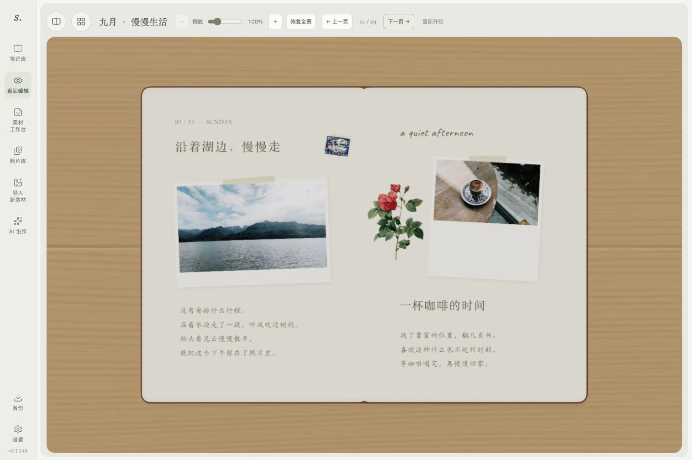
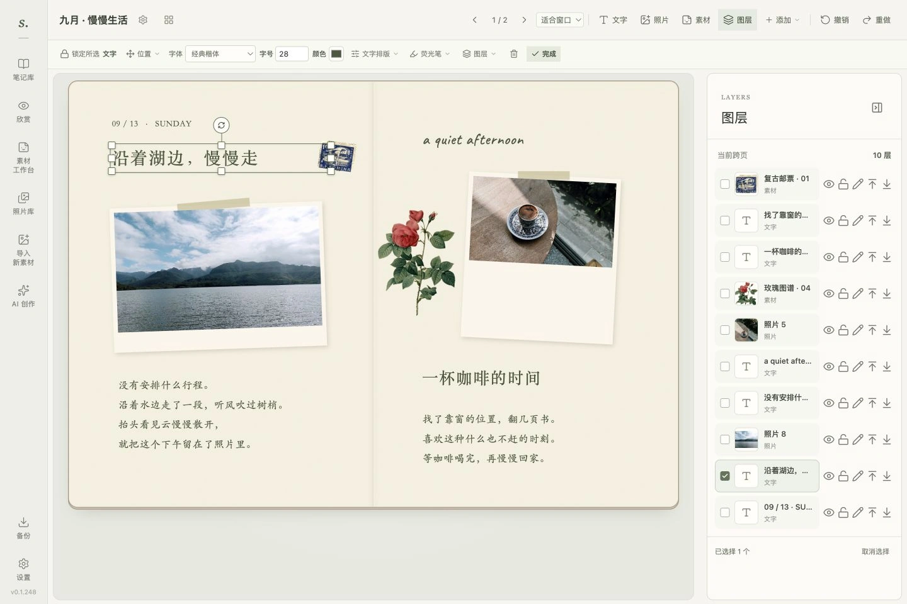
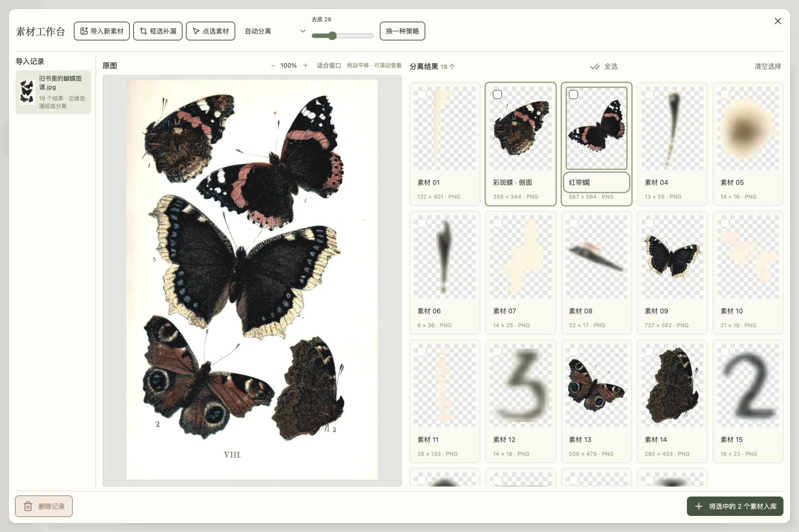
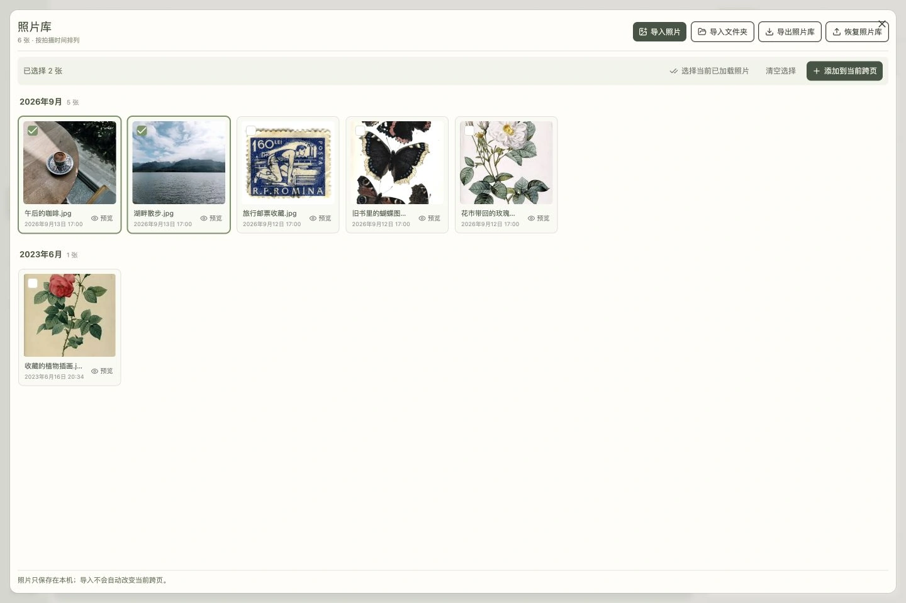

留在自己的电脑里
手帐与照片保存在本机。打开拾光，按自己的节奏记录、整理和翻阅。

查看真实界面 ↗01 — 像做一本真正的手帐
先看看，拾光用起来是什么样。
四个真实场景，从收藏素材到翻阅成册。
文字、照片、贴纸各自独立。调整字体和位置，在图层列表里整理前后关系，把一页慢慢拼好。
01 / 04
点击放大 ↗导入一张素材图，自动拆出候选，再挑选喜欢的部分。需要时框选补漏，确认后收入素材库。
02 / 04
点击放大 ↗把照片集中收好，按日期寻找和多选。选好之后直接添加到手帐，也可以送到素材工作台处理。
03 / 04
点击放大 ↗写好的手帐，也值得认真翻一遍。打开封面，逐页翻阅，放大看细节，或者切换到全部跨页。
04 / 04真实 App 界面 · 展示内容为示例点击图片，可以看清每个细节。
字，也有自己的笔迹。手写字体，让几句心情有温度。
纸，可以再多一层。底纸、边框、硫酸纸，慢慢叠出层次。
做好的，值得再翻翻。按页浏览，也能导出高清图片。
02 — 这是你的私人角落
手帐与照片保存在本机。打开拾光，按自己的节奏记录、整理和翻阅。
编辑时自动保存，误操作可以撤销。历史备份支持恢复为副本，保留已有手帐。
完整备份可以带上笔记、照片与素材。换电脑时导入，继续收藏新的日子。
AI 为可选功能。启用时，相关文字或图片会发送到你配置的模型服务；也可以直接使用本地排版。
从今天的一件小事开始
先在电脑上安装并启动拾光，再在浏览器里开始记录。
在 Mac 或 Windows 电脑上，安装 Node.js 22.21.0 或更高版本。
下载 Node.js ↗当前为邀请试用，安装文件由作者提供。收到完整项目压缩包后，解压到想存放手帐的文件夹。
请完整保留文件夹中的内容。
Mac：启动拾光手帐.command
Windows：启动拾光手帐-Windows.cmd
首次启动会安装所需依赖，准备好后自动打开浏览器。使用时保留启动窗口。
介绍网页不会替你安装或启动程序。
启动成功后，请使用自动打开的手帐页面。
可以。在 App 里点击文字即可编辑，照片、贴纸可以拖动、缩放和旋转，也能更换纸张和字体。这页展示的是实际使用截图；你可以在自己的手帐里自由调整。
不需要。可以手动添加文字、照片和素材，也可以使用本地排版。想使用 AI 排版或整理内容时，再在 App 设置中填写模型服务信息。
这张介绍页可以在手机上浏览。拾光 App 当前面向 Mac 与 Windows 电脑，请在电脑上安装和使用。
编辑会自动保存在本机。建议定期在 App 左侧的“备份”中导出完整资料，另存到安全的位置；恢复备份时，资料作为副本加入已有内容。